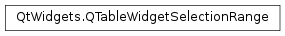

QTableWidgetSelectionRange¶
Synopsis¶
Functions¶
- def
bottomRow() - def
columnCount() - def
leftColumn() - def
rightColumn() - def
rowCount() - def
topRow()
Detailed Description¶
The
PySide2.QtWidgets.QTableWidgetSelectionRangeclass provides a way to interact with selection in a model without using model indexes and a selection model.The
PySide2.QtWidgets.QTableWidgetSelectionRangeclass stores the top left and bottom right rows and columns of a selection range in a table. The selections in the table may consist of several selection ranges.Note
If the item within the selection range is marked as not selectable, e.g.,
itemFlags() & Qt::ItemIsSelectable == 0then it will not appear in the selection range.See also
-
class
PySide2.QtWidgets.QTableWidgetSelectionRange¶ -
class
PySide2.QtWidgets.QTableWidgetSelectionRange(other) -
class
PySide2.QtWidgets.QTableWidgetSelectionRange(top, left, bottom, right) Parameters: - left –
PySide2.QtCore.int - other –
PySide2.QtWidgets.QTableWidgetSelectionRange - right –
PySide2.QtCore.int - bottom –
PySide2.QtCore.int - top –
PySide2.QtCore.int
Constructs an table selection range, i.e. a range whose
PySide2.QtWidgets.QTableWidgetSelectionRange.rowCount()andPySide2.QtWidgets.QTableWidgetSelectionRange.columnCount()are 0.Constructs a the table selection range by copying the given
othertable selection range.Constructs the table selection range from the given
top,left,bottomandrighttable rows and columns.- left –
-
PySide2.QtWidgets.QTableWidgetSelectionRange.bottomRow()¶ Return type: PySide2.QtCore.intReturns the bottom row of the range.
-
PySide2.QtWidgets.QTableWidgetSelectionRange.columnCount()¶ Return type: PySide2.QtCore.intReturns the number of columns in the range.
This is equivalent to
PySide2.QtWidgets.QTableWidgetSelectionRange.rightColumn()-PySide2.QtWidgets.QTableWidgetSelectionRange.leftColumn()+ 1.
-
PySide2.QtWidgets.QTableWidgetSelectionRange.leftColumn()¶ Return type: PySide2.QtCore.intReturns the left column of the range.
-
PySide2.QtWidgets.QTableWidgetSelectionRange.rightColumn()¶ Return type: PySide2.QtCore.intReturns the right column of the range.
-
PySide2.QtWidgets.QTableWidgetSelectionRange.rowCount()¶ Return type: PySide2.QtCore.intReturns the number of rows in the range.
This is equivalent to
PySide2.QtWidgets.QTableWidgetSelectionRange.bottomRow()-PySide2.QtWidgets.QTableWidgetSelectionRange.topRow()+ 1.
-
PySide2.QtWidgets.QTableWidgetSelectionRange.topRow()¶ Return type: PySide2.QtCore.intReturns the top row of the range.
© 2018 The Qt Company Ltd. Documentation contributions included herein are the copyrights of their respective owners. The documentation provided herein is licensed under the terms of the GNU Free Documentation License version 1.3 as published by the Free Software Foundation. Qt and respective logos are trademarks of The Qt Company Ltd. in Finland and/or other countries worldwide. All other trademarks are property of their respective owners.